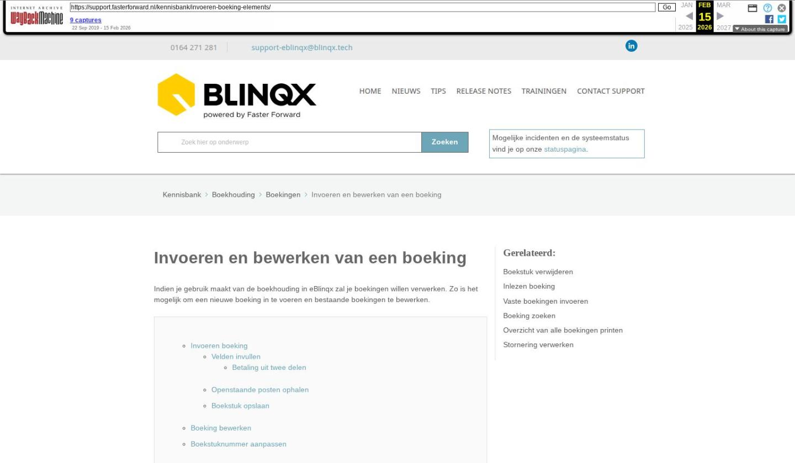

Invoeren en bewerken van een boeking

Tekstinhoud
Invoeren en bewerken van een boeking
Indien je gebruik maakt van de boekhouding in eBlinqx zal je boekingen willen verwerken. Zo is het mogelijk om een nieuwe boeking in te voeren en bestaande boekingen te bewerken.
Invoeren boeking
Velden invullen
Betaling uit twee delen
Openstaande posten ophalen
Boekstuk opslaan
Boeking bewerken
Boekstuknummer aanpassen
Invoeren boeking
Om een boeking in te voeren ga je naar Financieel – Boekingen – Boeking invoeren. Er zijn verschillende dagboeken waar je een boeking in kunt maken: Kasboek, Bankboek, Rekening courant, Verkoop, Inkoop en Memoriaal. Je klikt het betreffende dagboek aan waarin je een boeking wilt maken.
Velden invullen
Onder de kopjes 'Datum', 'Datum afschrift' en 'Periode' zullen automatisch de datum/periode van de huidige dag verschijnen. Dit is aan te passen aan de gewenste dag. Let daarbij op dat je een datum invult die niet in een afgesloten boekperiode valt.
Het beginsaldo wordt automatisch weergegeven. Het eindsaldo van het bankboek dien je zelf in te geven ter controle van het boekstuk.
Het boekstuknummer heeft eerst de status 'Nieuw' en wordt automatisch door Blinqx gevuld. Om dubbele boekingen te voorkomen, wordt het boekstuknummer pas toegekend zodra je een nieuwe boeking opslaat.
Je vult de overig velden in door erin te typen en indien van toepassing het gewenste resultaat uit het dropdownmenu te selecteren (met pijltjestoets en enter). Let op: indien de grootboekrekening een subadministratie betreft dan moet het veld Relatie ook gevuld worden. Als deze leeg blijft en je slaat het boekstuk op dan wordt de wijziging niet onthouden.
Betaling uit twee delen
Het kan zijn dat je een betaling hebt die uit twee delen bestaat, maar het bedrag als één bedrag binnenkomt op de bank. Dit kan je als volgt verwerken. Als je op de regel het bedrag aanpast naar het bedrag dat hoort bij het ene deel, dan krijg je een verschil onder de lijn. Je kan vervolgens vanaf de laatste regel in je boekstuk met je toetsenbord enteren, daardoor krijg je een nieuwe regel en daarop kan je het andere deel boeken.
Openstaande posten ophalen
In het veld Bedrag bij het invoeren van een bankboeking kun je middels F6 de openstaande posten ophalen. Klikken op zoeken geeft een lijst met openstaande posten. Je kunt deze los selecteren maar ook in één keer afboeken door de actie 'Gehele batch selecteren' te gebruiken.
Daarnaast kan je filteren op het openstaande bedrag. Deze filter geldt op het originele openstaande bedrag. Ook kan je filteren op relatie.
Deze knop is voor alle subadministraties beschikbaar:
Debiteuren
Crediteuren
Tussenrekening maatschappij
RC maatschappij
RC deelnemer
Onbekende betalingen
Vraagposten
Onbekende betalingen
Boekstuk opslaan
Wanneer je alles correct heb ingevuld sla je het boekstuk op. Het opslaan doe je door middel van het opslaanicoon. Via de knoppen 'Vorig boekstuk van boekjaar' en 'Volgend boekstuk van boekjaar' kan je bladeren tussen boekstukken. Dit zijn de boekstukken uit hetzelfde boekjaar waarin deze boeking zich bevindt. Je krijgt dan eerst een vraag of je zeker weet dat je de pagina wilt sluiten, zo ja dan klik je op 'ok'.
De status "voorlopig" geeft aan dat het boekstuk nog gewijzigd kan worden. Indien je op het pijltje achter de status klikt, krijg je eerst een vraag of je door wilt gaan. Zo ja, dan wordt de boeking definitief en kan de boeking niet meer gewijzigd worden (wijzigingen kunnen niet meer opgeslagen worden). Ook kan het boekstuk niet meer terug op de status voorlopig gezet worden, mits het een boekstuk in het verkoopboek betreft.
Ter aanvulling: je kunt de boeking opslaan met F12 of eventueel een regel verwijderen door middel van F2
Boeking bewerken
Na het opslaan van het boekstuk door middel van het opslaanicoon kan deze ook weer bewerkt worden zolang hij niet definitief is gemaakt. Om een boekstuk te bewerken ga je naar Financieel – Boekingen – Boekingen invoeren – het 2e tabblad Boekingen. Je selecteert hier het gewenste dagboek en vervolgens het gewenste boekstuk dat je wilt bewerken. Vergeet niet om na het bewerken weer op te slaan.
Boekstuknummer aanpassen
Het boekstuknummer wordt vanuit het systeem automatisch toegekend. Het is niet mogelijk het boekstuknummer achteraf te wijzigen. Het is wel mogelijk om per dagboek in te stellen met welk boekstuknummer er gestart moet worden. Dit stel je in via Financieel – Dagboeken onderhoud – betreffende dagboek – wijzigingsicoon. Hier zie je per jaar wat het volgende boekstuknummer gaat zijn als je in dit dagboek een nieuwe boeking wilt aanmaken.
Wil je dus dat een nieuwe boeking een ander, niet opvolgend, boeknummer krijgt dan kan je hier aangeven wat het nummer van het volgende boekstuk moet zijn. Vervolgens gaat het systeem vanuit dit boekstuknummer verder tellen.
Laatste update: 15 oktober 2025
Was deze informatie nuttig?
Ja Nee